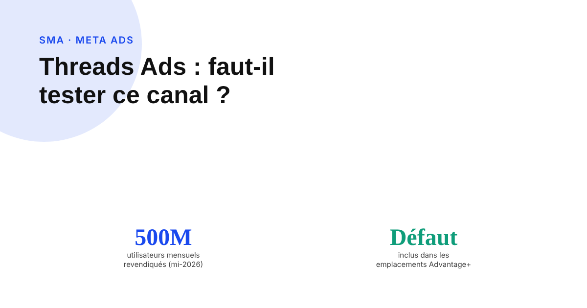
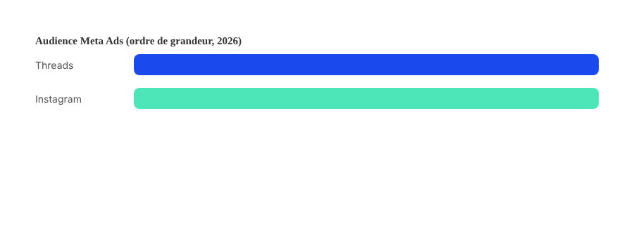

Threads Ads : faut-il tester ce nouveau canal publicitaire Meta en 2026 ?
La publicité sur Threads est désormais active dans la quasi-totalité des marchés et incluse par défaut dans les campagnes Meta Ads. Reste à savoir si ça justifie d'y consacrer du budget, ou si c'est encore trop tôt pour en tirer une vraie performance.

Meta a testé la publicité sur Threads dès janvier 2025, aux États-Unis et au Japon, avant une extension progressive puis un déploiement présenté comme mondial fin janvier 2026. Beaucoup d'annonceurs diffusent donc déjà sur Threads sans l'avoir choisi explicitement : le placement est activé par défaut dans les emplacements Advantage+ de Meta Ads Manager, désactivable manuellement si on préfère l'exclure.
Ce n'est pas un canal séparé, c'est un placement en plus
Threads ne dispose d'aucun système de campagne propre, ni d'aucun ciblage spécifique. C'est un emplacement supplémentaire à l'intérieur des campagnes Meta Ads existantes, qui repose sur les mêmes objectifs (notoriété, trafic, engagement, génération de leads, ventes) et la même logique d'attribution automatique des placements Advantage+ que Facebook et Instagram. Les formats disponibles couvrent l'image, la vidéo et le carrousel, avec l'ajout plus récent des annonces de catalogue Advantage+. Isoler la performance de ce placement spécifique nécessite d'ouvrir le rapport par emplacement dans Ads Manager : sans cette étape, Threads reste invisible, noyé dans la performance globale de la campagne.
Une audience réelle, mais encore loin d'Instagram
Meta communique régulièrement sur la croissance de Threads : 350 millions d'utilisateurs actifs mensuels annoncés début 2025, puis plus de 400 millions quelques mois plus tard, et 500 millions revendiqués à la mi-2026. C'est une audience significative, mais qui reste une fraction de celle d'Instagram ou de Facebook : Threads se positionne comme un complément de portée, pas comme un levier principal, au moins à ce stade.

Les chiffres de CPM qui circulent : à prendre avec de vraies pincettes
Meta ne publie aucune donnée officielle de coût par mille impressions spécifique à Threads. Les estimations qui circulent dans la presse spécialisée et sur les outils ad-tech varient considérablement d'une source à l'autre — certaines évoquent un CPM nettement inférieur à celui d'Instagram, d'autres des écarts beaucoup plus modestes. Aucune de ces estimations ne vient de Meta elle-même : ce sont des agrégations tierces, à traiter comme des ordres de grandeur directionnels, pas comme une référence pour bâtir un budget prévisionnel.
Canal mûr ou encore expérimental ? Les avis divergent, même chez les professionnels
Le déploiement mondial de janvier 2026 a changé la donne côté disponibilité, mais pas forcément côté maturité perçue : certains observateurs considèrent que Threads a dépassé le stade expérimental depuis ce déploiement généralisé, d'autres continuent de le qualifier de canal jeune, avec un CPM encore bas faute d'une densité d'annonceurs comparable au reste de l'écosystème Meta. Plusieurs retours d'agences font d'ailleurs état d'un enthousiasme encore mesuré côté annonceurs. Il n'existe pas, à ce stade, de consensus clair chez les professionnels sur la question — ce qui justifie une approche de test plutôt qu'un pari budgétaire conséquent.
Comment évaluer le canal sans se fier aux chiffres qui circulent
La seule donnée fiable est celle de son propre compte : ouvrir le rapport de répartition par emplacement, comparer le coût par résultat sur Threads à celui obtenu sur Instagram et Facebook pour une même campagne, et observer sur une période suffisante avant de conclure. Si le placement reste inclus par défaut dans les emplacements automatiques, cette comparaison se construit sans surcoût ni configuration supplémentaire : il suffit de la regarder.
FAQ
Faut-il créer une campagne spécifique pour diffuser sur Threads ?
Non. Threads n'est pas un système publicitaire séparé : c'est un placement supplémentaire à l'intérieur des campagnes Meta Ads existantes, inclus par défaut dans les emplacements Advantage+ et désactivable manuellement si on préfère l'exclure.
Threads a-t-il un ciblage publicitaire spécifique, différent d'Instagram ou Facebook ?
Non, aucun ciblage propre à Threads n'existe à ce jour. Le placement repose sur les mêmes objectifs de campagne (notoriété, trafic, engagement, leads, ventes) et la même logique Advantage+ que le reste de l'écosystème Meta Ads.
Peut-on se fier aux chiffres de CPM sur Threads qui circulent en ligne ?
Avec prudence. Meta ne publie pas de données officielles de CPM par placement. Les chiffres qui circulent viennent d'estimations d'outils ad-tech tiers, avec des écarts importants d'une source à l'autre — à traiter comme des ordres de grandeur directionnels, pas comme une référence fiable.
Envie de savoir si Threads mérite une place dans votre mix Meta Ads ?
Pour aller plus loin, voir la page SMA, et l'article Meta Ads : segmenter ses audiences sans tout miser sur le ciblage automatique.
Pour continuer sur ce sujet.